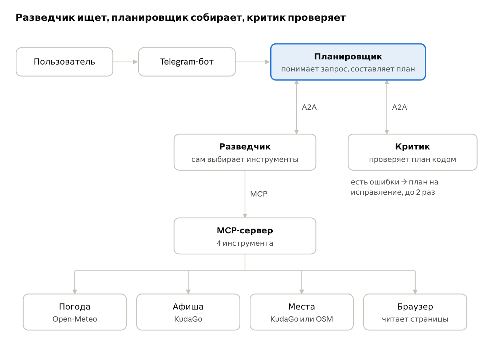

Планировщик выходных
Агентный Telegram-бот, который за минуту собирает план выходных по часам: смотрит погоду, афишу и места, укладывается в бюджет и учитывает возраст детей.
Статус: Прототип MVP собран за три дня в октябре 2026 года, код открыт. На реальных пользователях ещё не запускался — результатов использования пока нет.

Проблема и контекст
Чтобы спланировать выходные, люди 30–40 минут переключаются между афишей, картами и прогнозом погоды. Это оценка из постановки проекта, а не измерение.
Гипотеза: готовым планом по часам за минуту — с учётом погоды, бюджета и детей — будут пользоваться и возвращаться к нему.
Аудитория и ключевой сценарий
Люди, которые планируют выходные в своём городе, — в том числе с детьми; афиша берётся из KudaGo. Сценарий: написать боту «суббота с ребёнком 6 лет, до 3000» и получить расписание со ссылками; если не нравится — «Другой вариант», «Дешевле» или правка своими словами.
Моя роль
Проект мой целиком: постановка задачи, требования, архитектура, код, эвалы и план запуска. Код писал вместе с ИИ-ассистентом для программирования.
Требования и критерии успеха
- В плане только реальные события и места — из найденных инструментами.
- Соблюдение бюджета, возраста детей, исключённых категорий и погоды.
- Устойчивость к сбоям моделей и источников данных.
- Продуктовые метрики заложены: activation, time-to-value, return 7d, доля 👍, refine rate. Целевые значения до запуска не зафиксированы.
Архитектура и поток данных
- Пользователь пишет в Telegram-бот; оркестратор разбирает запрос в предпочтения (JSON с валидацией).
- Агент-разведчик по протоколу A2A собирает кандидатов через собственный MCP-сервер: погода, афиша, места, чтение страниц браузером.
- Оркестратор собирает план только из реальных id; факты (названия, цены, время) подставляет код.
- Агент-критик по A2A проверяет план: 18 детерминированных проверок и LLM-ревью.
- До двух раундов исправлений; если ошибки остались — ошибочные пункты вырезаются.
Технологии
Python 3.13 · MCP · собственная реализация A2A (JSON-RPC) · Playwright · KudaGo, Open-Meteo, OpenStreetMap · любой OpenAI-совместимый API или GigaChat · Telegram (long polling) · Docker · GitHub Actions.
Реализация и код
Исходный код, инструкция запуска и документация — в репозитории на GitHub. Подробная архитектура — ARCHITECTURE.md, план первых пользователей — LAUNCH_PLAN.md. Публичного демо нет: бот запускается локально или на VPS со своими ключами.
Как проверяется качество
- 55 юнит-тестов и CI на каждый коммит (по README).
- 32 эвал-кейса на фиксированных данных: бюджет, дети, дождь, даты, неизвестный город, off-topic и prompt injection — в том числе спрятанная на странице события.
- Таксономия провалов, сравнение моделей между прогонами, LLM-as-judge как дополнительный сигнал.
Результаты
Не измерялись: бот ещё не запускался на реальных пользователях. После запуска здесь появятся данные по activation, возвратам и оценкам.
Ограничения, риски и безопасность
- Зависимость от внешних источников данных — ретраи, кэш, circuit breaker и запасной источник мест.
- Prompt injection через веб-страницы — текст помечается как недоверенный, а в план попадают только объекты из реестра найденного.
- SSRF — браузерный агент открывает только публичные адреса.
- Стоимость — лимит шагов агента и планов в час на пользователя.
Выводы и следующие шаги
Главный вывод проектирования: модель выбирает, код отвечает за факты — это защищает от галлюцинаций надёжнее промптов. Дальше: запуск на первых пользователях, стриминг ответа и кэш для снижения задержки, трассировка по стадиям, онлайн-эвалы на реальных диалогах.